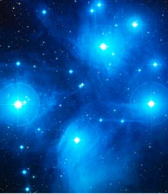

Desarrollo de la tarea
|
1.-¿Qué es una supernova? 2.- ¿Qué es una nebulosa planetaria? 3.- ¿De dónde proviene el nombre de Vía Láctea? 4.- ¿De qué está formado el medio interestelar? 5.- ¿Cómo se disponen las galaxias en el cosmos? 6.- ¿Cómo podemos determinar la edad de una estrella? 7.- ¿Qué es un púlsar? 8.- ¿Qué cuerpos componen el Sistema Solar? 9.- ¿Han sido siempre las galaxias como son ahora? 10.- ¿Qué es una enana blanca? 11.- ¿Hay diferentes tipos de planetas? ¿Por qué son diferentes entre sí? 12.- ¿Todos los planetas del Sistema Solar tienen satélites? 13.- ¿Por qué algunos planetas tienen anillos? 14.- ¿Por qué Plutón ya no es un planeta? 15.- ¿Cuál es el mayor satélite del Sistema Solar? 16.- ¿Cómo se genera la energía que emiten las estrellas? 17.- ¿Qué se conoce cómo Grupo Local? 18.- ¿Qué es la materia oscura? 19.- ¿Dónde están situados los asteroides en el Sistema Solar 20.- ¿Diferencias entre asteroide y cometa? 21.- ¿Impactará un asteroide con la Tierra? 22.- ¿Estamos sólos en el Universo? 23.- ¿Qué son las lágrimas de San Lorenzo? 24.- ¿Quién fue el primer ser vivo que viajó al espacio?
|
25.- ¿Dejará el Sol de brillar algún día? 26.- ¿Qué estudia la radioastronomía? 27.- ¿Hay glaciares en Marte? 28.- ¿Qué comen los astronautas? 29.- ¿Cómo mantienen su higiene personal los astronautas? 30.- ¿Qué son las tormentas solares y como afectan a la Tierra? 31.- ¿Se puede hacer turismo espacial? 32.- ¿Qué es un exoplaneta? 33.- ¿Existen diferentes tipos de galaxias? 34.- ¿Cómo se detectan los exoplanetas? 35.- ¿Qué estructura tiene una galaxia? 36.- ¿Cuál es la supernova más joven de la Via Láctea? 37.- ¿Cuál es el telescopio más potente del mundo? 38.- ¿Cuando se vio por primera vez la cara oculta de la Luna 39.- ¿Qué edad tiene la Tierra? 40.- ¿Cuál es la primera imagen de la Tierra desde la Luna? 41.- ¿Quién descubrió el movimiento del Sol en el espacio? 42.- ¿Qué es la zona de habitabilidad estelar? 43.- ¿Qué es el proyecto Hubble? 44.- ¿Qué es una explosión de rayos gamma? 45.- ¿Qué es la microgravedad? 46.- ¿Hasta dónde se extiende el Sistema Solar? 47.- ¿Quién fue Carl Sagan? 48.- ¿Qué son los objetos transneptunianos? 49.- ¿Qué planeta es el más caluroso? 50.- ¿Es la Tierra el único cuerpo celeste del Sistema Solar con océanos? |
Ejemplo
|
¿Quizás te hayas preguntado cuantas estrellas hay en el Universo?.
|
 Fuente: NASA y ESA |
En un paquete de un kilo de azúcar podemos contar, con muchísima paciencia, alrededor de cinco millones de granos de azúcar, por lo tanto se necesitarían14.000.000.000.000.000 de kilos o paquetes para tener tantos granos de azúcar como estrellas hay en el Universo visible.
Ahora, si has buscado en la red, puede que coincidamos y que te haya aparecido como la estrella más cercana Próxima Centauri, que es una estrella enana y no resulta visible a simple vista.
En cuanto a la estrella más alejada, astrónomos pertenecientes al Observatorio Europeo Austral han detectado el colapso de una estrella situada a 12.000 millones de años luz, considerada como el objeto estelar más lejano descubierto hasta la fecha.
Fuente: Materiales CMC-Proyecto AGREGA. Junta de Andalucia.